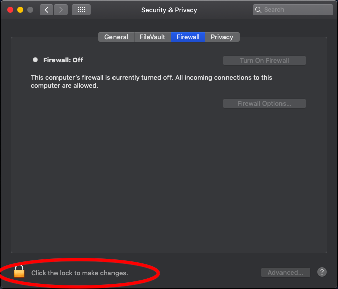

How to close open ports on Mac OS
Step 1: Launch the “Systems Preferences” panel
Step 2: Click the “Security & Privacy” icon followed by the “Firewall” tab
Step 3: Click the lock to make changes. Enter credentials when prompted

Step 4: Click the “Turn On Firewall” button.

Step 5: Click the lock to save your changes and prevent them from being reset